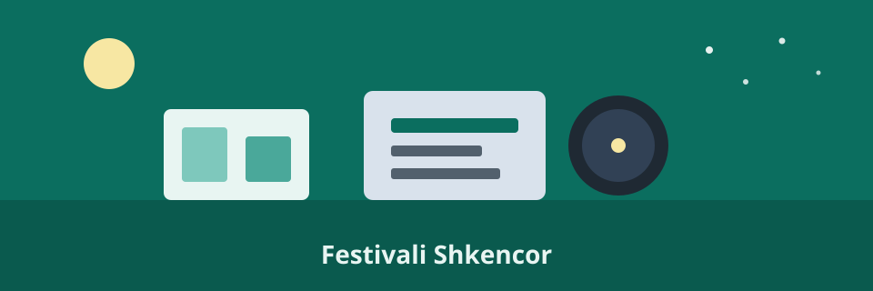

Laboratori i robotëve autonomë për navigim indoor dhe demonstrime live me sensorë ultratinguj në kohë reale
Robotikë
24 tetor · 10:00–11:30
DetajeProgramimi në WWW · Java V

Robotikë
24 tetor · 10:00–11:30
DetajeInteligjencë artificiale
24 tetor · 11:00–12:30
DetajeAstronomi
24 tetor · 18:00–20:00
DetajeMjedis
24 tetor · 13:00–14:30
DetajeKimi
24 tetor · 15:00–16:30
DetajeProgramim
24 tetor · 09:00–17:00
DetajeSalla B2. Materialet jepen në vend. Ekipe me tre persona. Niveli: fillestar.
Salla A1. Laptop i nevojshëm. Nuk kërkohet përvojë paraprake me Python.
Terasa e fakultetit. Në rast moti të keq sesioni zhvendoset brenda.
Amfiteatri. Dy ekipe debatuese; publiku voton në fund të seancës.
Laboratori 3. Pajisjet mbrojtëse jepen nga organizatori.
Labi i informatikës. Prezantim final pesë minuta për ekip.